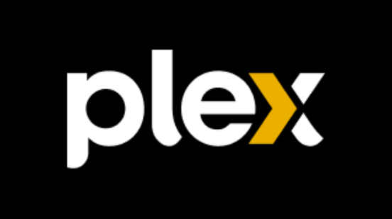
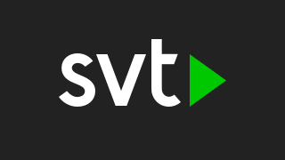

Four directions using your mountain-lake wallpaper, muted, with smaller app tiles and frosted glass. Click a tile to focus it, then use the arrow keys to move the focus like the remote's D-pad. The sliders apply to all four. Dashed boxes mark room for later features.
Big clock top left, apps in one glass dock at the bottom. The wallpaper stays the hero; the open space top right and in the middle takes widgets later.


Everything in one frosted panel on the left: clock, a short app list, More apps and Settings. The rest of the screen is just the (less muted) wallpaper, with space bottom right for a widget.
Classic TV layout: a labelled row low on the left, each app framed in its own glass card with its name. Small clock top right. Rows stack upwards when more features come (dashed).
The calmest one: heavily blurred wallpaper, a large thin clock in the middle and the apps in a single glass pill. More apps is the round button at the end. Widgets would sit in the corners.
RenderEffect came in Android 12), and
the CPU is weak. Because the wallpaper is static, the launcher would blur it once at start-up and draw
that blurred copy inside each glass panel. It looks the same and costs nothing per frame.